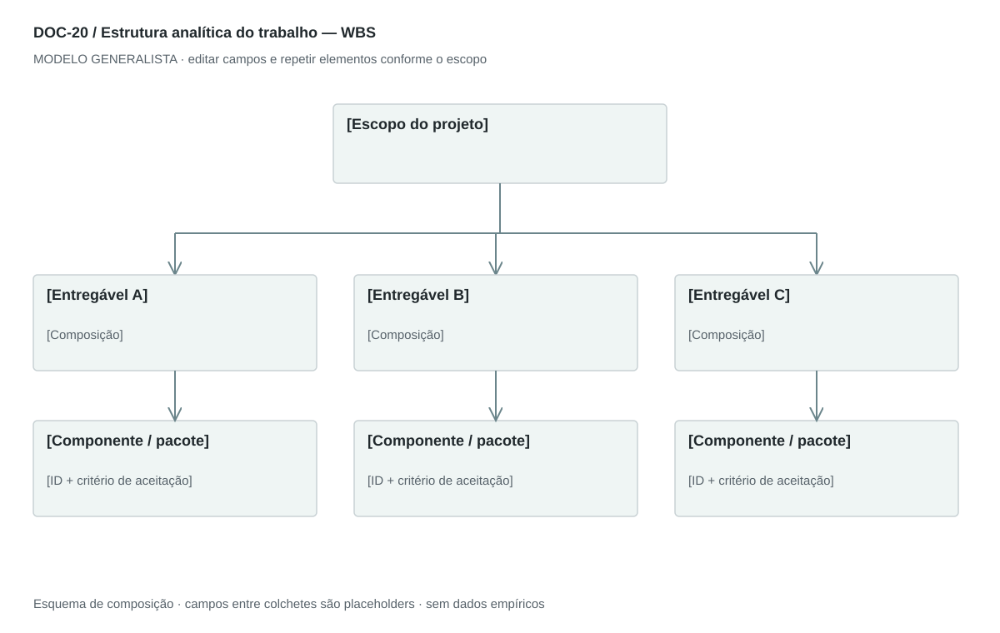

DOC-20 / Biblioteca documental generalista
Estrutura analítica do trabalho — WBS
Organizar o escopo total do projeto em pacotes de trabalho gerenciáveis e rastreáveis às entregas.
Modelo de investigação. Não representa uma análise concluída. Campos vazios devem permanecer identificados; não inventar dados para completar figuras.
Estrutura editorial
Árvore resumida em paisagem + dicionário em retrato ou planilha. Desdobrar por entregável; tarefas detalhadas ficam dentro de pacotes e o cronograma no roadmap.
Visual previsto

Projeto → entregas → pacotes. Não confundir ramos com ordem temporal. A ligação com PBS, RACI e roadmap é feita pelos IDs.
Imagens: Árvore e tabela; nenhum gráfico de progresso é necessário antes da execução. Não inserir frentes tecnológicas ou jurídicas sem pertinência.
Dicionário de dados
| Campo | Tipo | Dado necessário |
|---|
| pacote_id | referencia | Identificador hierárquico do pacote |
| parent_id | referencia | Pacote superior ou null para raiz |
| entrega_id | referencia | Componente PBS ao qual contribui |
| escopo | texto | Resultado incluído e limites do pacote |
| responsavel | referencia | Papel de execução vinculado ao RACI |
| esforco | decimal | Estimativa em unidade declarada, null se desconhecida |
| unidade_esforco | texto | Horas, dias ou outra unidade consistente |
| custo | decimal | Estimativa na moeda declarada, sem assumir desembolso real |
| aceite | texto | Condição verificável de conclusão |
| dependencia_id | referencia | Outro pacote necessário |
Todos os registros precisam de classificação, fonte, localização, datas, confiança e limitação. Números também precisam de unidade, moeda quando aplicável e período.
Modelo preenchível
Os quadros amarelos podem ser editados nesta página para impressão. Edições não são gravadas automaticamente: use o Markdown/JSON para manter uma versão ou imprima em PDF após editar.
[Negócio] · [Versão] · [Data-base] · [Autor] · [Audiência] · [Território]
Pergunta decisória: [A preencher]
Escopo: [A preencher]
1. Escopo do projeto
Incluído, excluído e critério de conclusão global.
[Análise + evidência + implicação + lacuna]
2. Decomposição
Resultados de nível superior e pacotes; incluir coordenação e transição necessárias.
[Análise + evidência + implicação + lacuna]
3. Dicionário dos pacotes
Entrega, limites, responsável, esforço, custo e critério de aceite.
[Análise + evidência + implicação + lacuna]
4. Dependências
Relacionar pacotes, componentes da PBS e marcos sem duplicar escopo.
[Análise + evidência + implicação + lacuna]
5. Controle de mudanças
Versionar inclusão/exclusão e seus impactos em prazo e orçamento.
[Análise + evidência + implicação + lacuna]
Decisão e próximo passo
[Decisão e justificativa]
[Alternativa considerada]
[Condição de reversão]
[Ação, responsável, prazo e critério]
Fontes e limites
[Fonte + localização + datas + o que sustenta + limitações]
Critérios de revisão
- Decomposição cobre todo o escopo declarado sem sobreposição.
- Pacote tem saída verificável, dono e unidade de estimativa.
- WBS não se confunde com PBS nem com sequência temporal.
Estudo do arquivo original
DOC-20-fonte.pdf — Duas páginas em paisagem. A primeira contém grande tabela rasterizada com sete colunas de frentes de trabalho e decomposições numeradas; a segunda explica gestão, produto, marketing/vendas, suporte, segurança, jurídico e infraestrutura. A tabela densa funciona como inventário, mas é difícil de ler na visão geral.
Observação do original e adaptação recomendada são camadas distintas. Nomes, preços, localidades, contatos e conclusões do caso-fonte não devem preencher a nova análise.